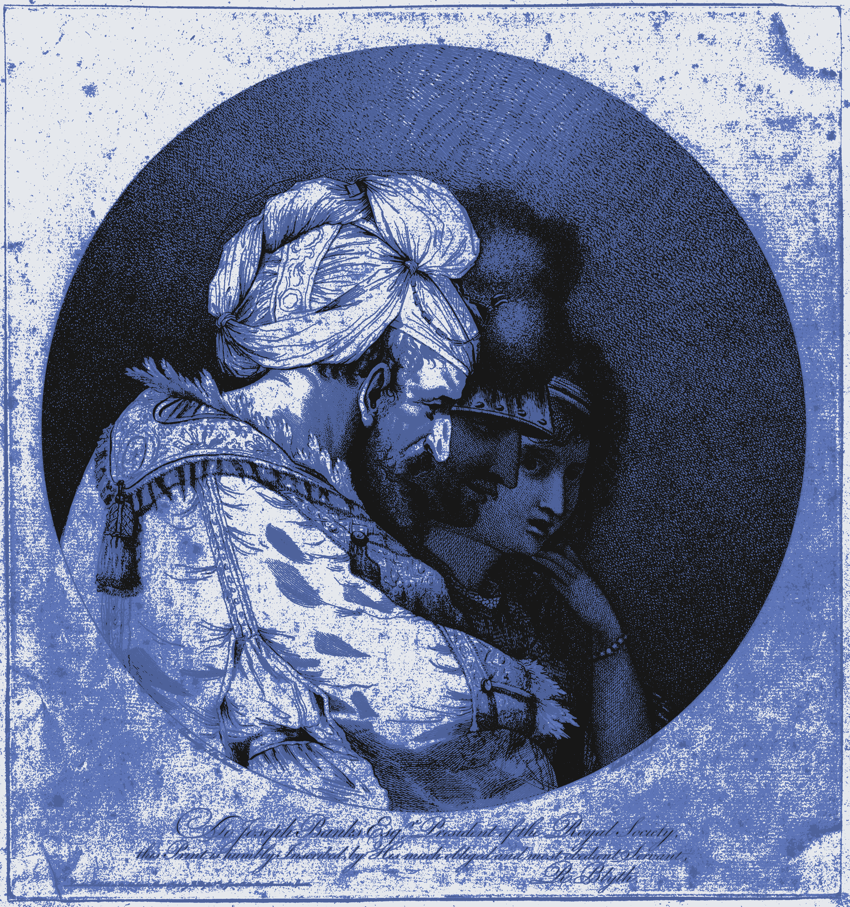

█
█▄▄as conversaciones era triviales, como siempre: el tiempo, los niños, qué se yo. Flotaba, como siempre, un olor a desinfectante, al principio enfermaba, pero con el tiempo uno se iba acostumbrando. Tomó los guantes y el bisturí ―como siempre― y se acercó al primer cadáver. Era jóven, no mayor de 30 años, había sido atropellado. Cuando era más novato su cabeza estallaba con preguntas, a construir un pasado ficticio que las satisfaciera. Ahora solo había rutina en sus gestos. Fue desmembrando, lentamente, separando hueso y tejido, elaborando con paciencia los circuitos neurales, reconfigurándolos a la manera de Von Neumann, nervio a nervio. Cuando la entraña estuvo completada, la fue protegiendo poco a poco con los huesos, dando un toque ornamental para disfrute del cliente y, cuando acabó, la metió en la bolsa de piel. Se dirigió al segundo cadáver.
Deriva
